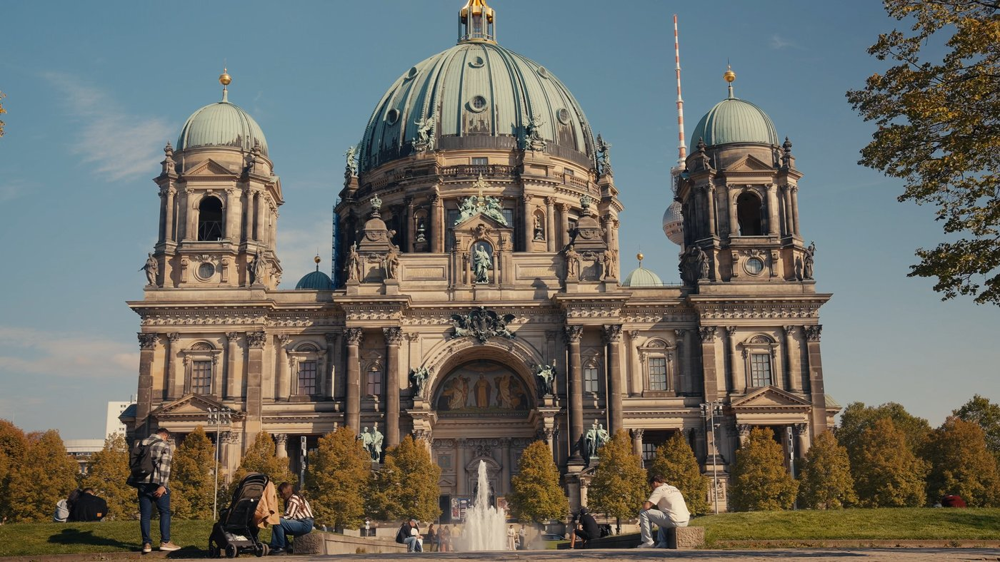
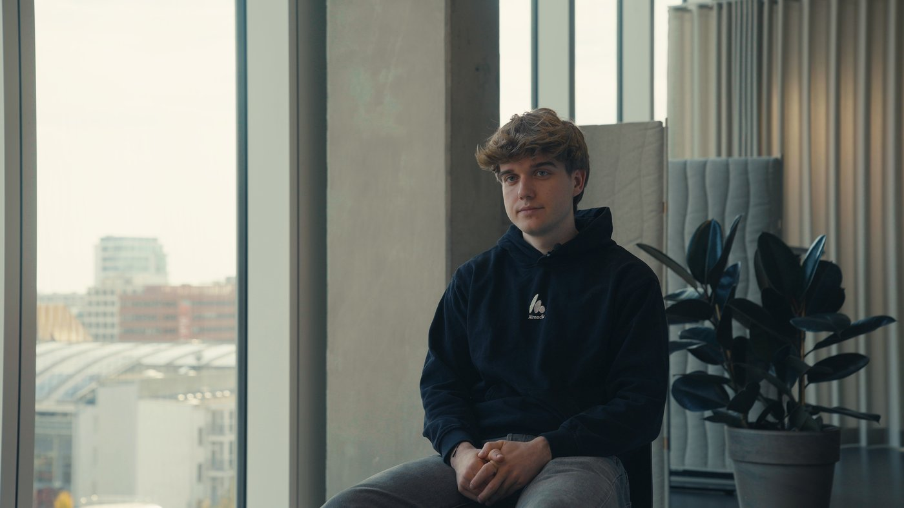
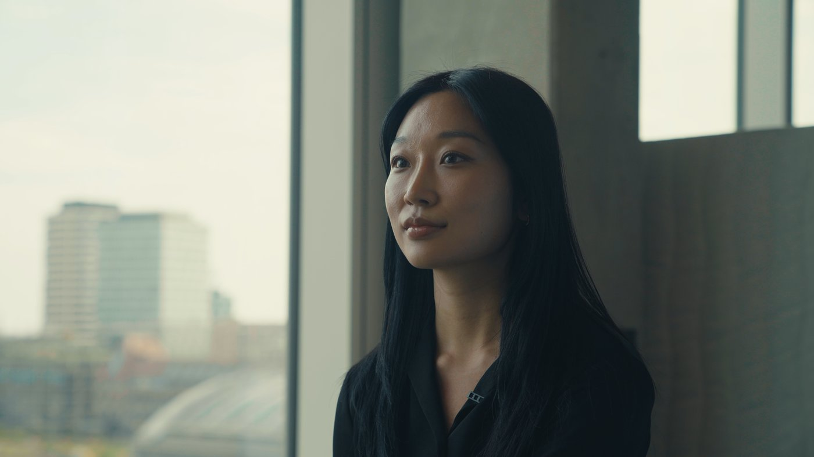
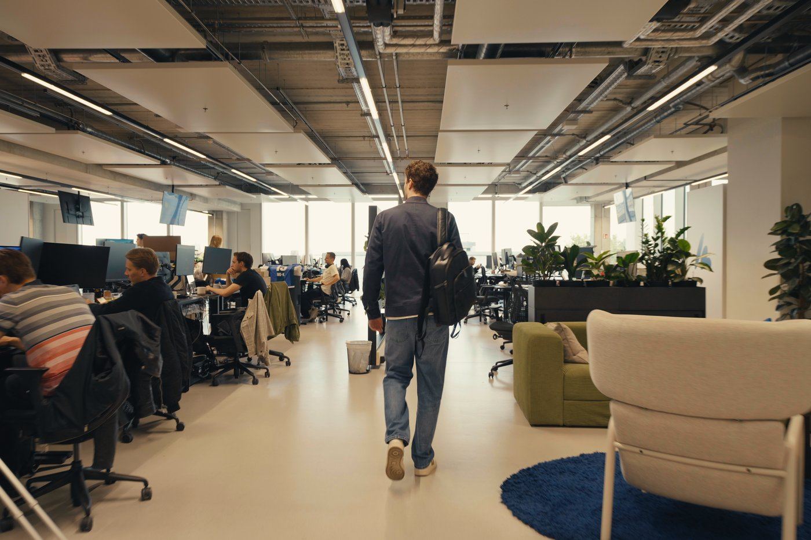
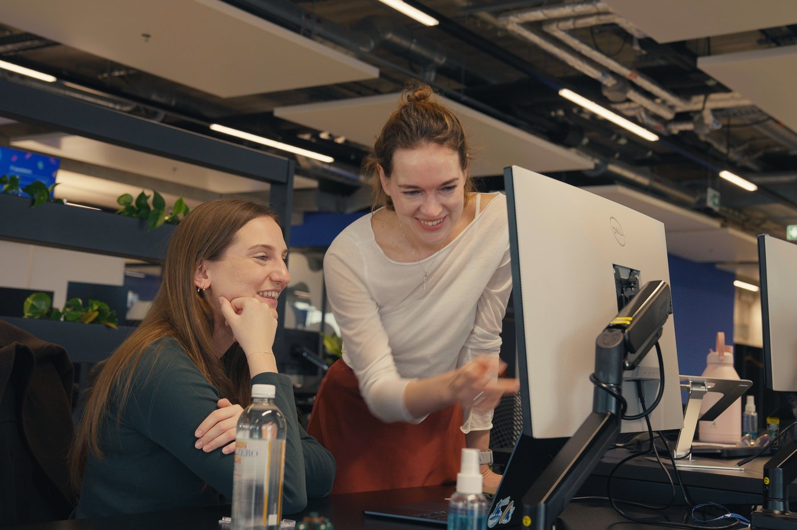
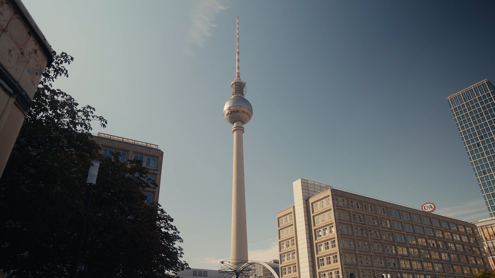

(Case 01) Client · Almedia
Meet Almedia
A brand film with founder and team interviews, shot on location in Berlin — the city as the stage, the people as the story.

The brief
Show the company through the people who build it — founder and team, in the office and in the city they work in.
What we did
- Founder and team interviews on location
- Office and team b-roll
- Berlin city b-roll
- Edit and colour





Planning something like this?
Start a project →